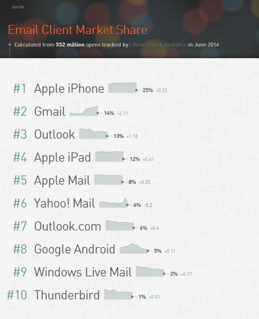

响应式邮件设计
响应式网页设计已经成为潮流好几年了，不过国内一般都会落后于潮流好几年，但这两年，随着bootstrap的流行，许多网页都已经是响应式设计的了。为了追求网页在移动设备上的良好体验，网页响应式的设计已经深入人心，但另一个巨大的领域却被大多数人忽略了，那就是邮件的响应式设计，要知道，每天被点击查阅的邮件数量也是大的惊人呢！
最佳实践
HTML
使用
<table>
就像1999年一样使用tables来编码，不要使用<div>或浮动来进行布局。Microsoft Outlook 的某些版本会使用它自己的文字标记处理引擎并且要求使用table进行布局。使用嵌套表格进行复杂的布局
避免使用rowspan，尽可能少用colspan。否则你将会发现自己经常为模板和代码的易读性和灵活性所困扰。复制和粘贴table比找出某一行在哪要容易多了。避免使用语义化的HTML标签。
一些邮件客户端会使用自己的样式来渲染html标签，比如<p>,<h1>等。要模拟段落之间的间隔，使用<br><br>要优于使用<p>。
CSS
使用内联CSS
避免使用CSS属性的简写方式
这种写法是OK的：font: normal 12px/18px Helvetica, sans-serif;但这种更好：
font-weight: normal; font-size: 12px; line-height: 18px; font-family: Helvetica, sans-serif;使用属性选择器定义样式
比如：td[class="force-col"]{ display:block; }不要使用类，比如
.container，因为雅虎邮箱将会将你的邮件按移动样式来加载。不要使用浮动
Outlook不支持浮动，所以你的HTML基本代码比如<table>、<img>应该经常借助align="left"等。
记住：默认使用<table align="left">，仅在移动样式中使用float。
常见问题
IOS为日期和地址生成了蓝色链接
有一些客户端（如Apple）会自动把任何可能是日期、电话号码、地址或URL变成链接，浏览器默认会将链接显示为蓝色。为了避免这种情况，可以在父元素上定义你自己的颜色，比如：
span[class="ios-link"] a {
color:#117692;
text-decoration: underline;
}详见：Litmus: Banning Blue Links on iOS Devices
我的文字在Hotmail中变成绿色了！？
这可能是因为你在使用header标签，如<h1><h2><h3>等。同时还推荐尽量避免使用<p>标签，所有文字的样式都通过<div>的内联样式来完成，并且使用<br><br>来隔断文字。
我的文字和图片混在一起了！
解决方案：使用<tbale>s。我们前端工程师都对.clearfix很熟悉，就是通过<table>来实现的。
常规的HTML实现，可能像下面这样：
<div class="clearfix">
<div class="i-am-floated-left">…</div>
<img class="i-am-floated-right" src="kitten.jpg">
</div>要解决这个问题，你需要做的就是把每一行用<table>包裹起来：
<table>
<tr>
<td>
Some content here.
<img src="speaker.jpg" align="right">
</td>
</tr>
</table>Yahoo显示移动版本
参见最佳实践，不要使用类，请使用属性选择器。
相关数据
- 客户端份额
下面是6月份最新的全球邮件客户端份额分布，这份数据是从5.5亿公开的邮件中统计出来的，最新邮件客户端市场份额请看emailclientmarketshare。
